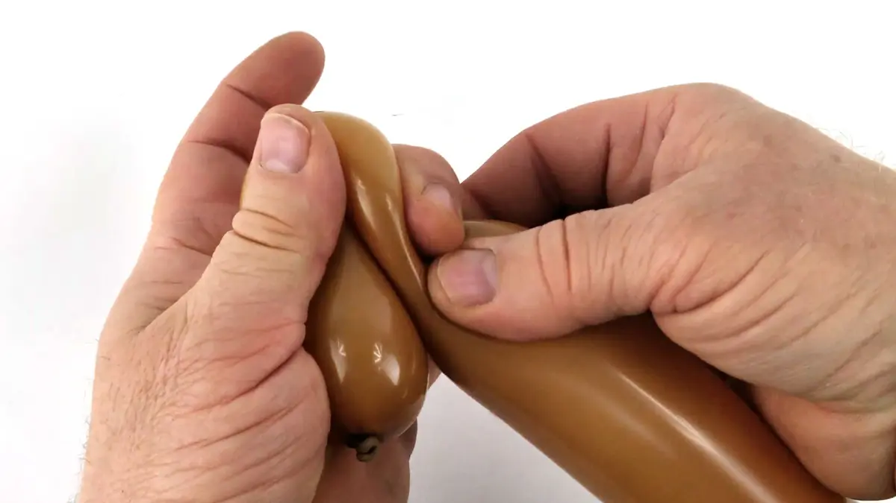
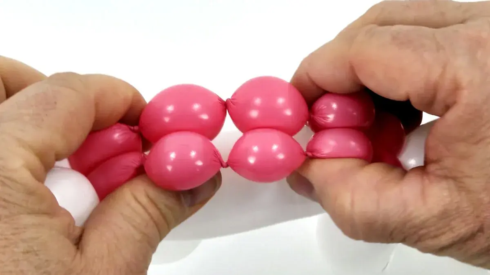
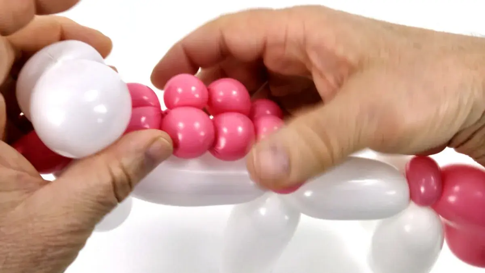

Here is a twin tutorial in which your will learn to make a horse (with 1 balloon) and... a unicorn (with 2 balloons). Indeed a unicorn looks very much like a horse except for the horn and the colors. Please note that these two models are not really suitable for beginners and you would need quite a bit of balloon modeling practice before you can do them satisfactorily. Learning to do the balloon horse first will increase your chances of success with the balloon unicorn.
Following is a list of tutorials that you must absolutely master before you can successfully execute both models:
1- You will need one "260" balloon, brown for example. IMPORTANT: Do not inflate it too much, You must leave a generous margin not inflated at the end of the balloon.2- Make a knot and pull it all the way towards the lip of the balloon,3- so that it liberates an extra portion of the latex,4- which will then be filled by the air pressure from within the balloon (Review the tutorial about air pressure management if necessary).5- Bend the beginning part of the balloon at about 4/5 cm from the lip,6- pinch the ballon at the angle you just formed,7- and release that pinch slowly,8- so that the angle thus formed keeps that shape by itself (Review the tutorial about making angles if necessary).

9- Twist the balloon right after that angle,10- and make an off-centered bubble (like we did in the giraffe tutorial),11- followed by 2 small oval bubbles,12- that we will lock together to form the two ears.13- To form the neck, we will bend again the balloon, at about 6/7 cm from the head and ears,14- pinch and release slowly...15- to form a new angle on the balloon.16- Twist the ballon right after the angle,17- to form another off-centered bubble. 18- We will now start a series of four very small round bubles,19- which we will lock between the ears and the head of our future horse.20- This first series of bubbles will be followed by another series of four very small bubbles of exactly the same size. 21- Now, hold the two series of four bubbles together at the base of the neck,22- and with your other hand, hold these two series of bubbles together at the middle, between the second and third bubbles of each series.23- Rotate these four bubbles together (the first and second of both series) between your two hands.24- The two series of bubbles are now safely locked together. 25- Roughly estimate a small half of the remaining part of the balloon,26- and then the quarter (half of half).27- This is where you will fold and twist the balloon to form a rather long bubble (the first front leg of the horse),28- which will be followed by a second bubble of exactly the same size (the second front leg of the horse).29- Once both front legs are locked together, make another smaller bubble for the tummy of the horse.30- Then, another bubble of exactly the same size as the two front legs (which will be the first back leg),31- followed by another bubble of exactly the same size again (which will be the second back leg).32- Once you lock the two back legs together, whatever balloon length is left will be used for the tail (it shouldn't be too long, not too compressed).33- To give the tail a natural flowing shape, first hold it against the back legs and pinch it at about 1 or 2 cm to force the air back up toward the knot, but also towards the end (thus creating an angle). The tail should now go downward,34- Then pinch the tail half way, but this time in the oposite direction, away from the back legs, and towards the end of the tail.35- You should get something like this!36- Take a good marker and draw the eyes on the head.37- And here is our lovely little horse!!
How to make the Balloon Unicorn:
1- Inflate a white balloon leaving a margin of aproximately the width of your hand. Also inflate a pink balloon, but only the width of your hand.2- As we did for the horse, bend and pinch the beginning part of the balloon at about 5 cm from the lip,3- so that the angle thus formed keeps that shape by itself.4-Twist the balloon right after that angle,5- and make an off-centered bubble,6- followed by a slightly oval bubble for the first ear,7- which will also be followed by another oval bubble of same size,8- to form the second ear,9- and lock both ears together.10- Then twist a small round bubble,11- and transform this bubble into a pinch twist,12- which you will slide between the forehead and the ears.13- To form the neck, we will bend, squeeze and release the balloon, at about 7/8 cm from the head (a bit longer than for the horse).14- If you did it correctly (as you should by now) an angle should now be clearly formed on the balloon.15- As you probably guessed, you will now make an off-centered bubble right after the angle,16- followed by a long bubble for the first front leg of the unicorn (it should be a bit bigger than the neck),17- then another bubble of the same size for the second front leg,18- and lock both bubbles together at the base of the neck.19- At this stage, you should have something that looks like this.20- Make another bubble, smaller than the legs, for the tummy,21- followed by a longer bubble for the first back leg, which should have exactly the same size as the front legs,22- then another bubble which should also have the same size for the second back leg.23- But, instead of locking both bubbles together, block each one between your fingers to prevent them from unraveling,24- so that you can take the pink ballon, slide its knot at the base of the last white bubble and roll it around it a few times.25- Once they are locked together securely, pierce the last white bubble to deflate it,
26- and tie that extra bit of white balloon together with the bit of pink balloon where the knot is.27- Trim the excess of white and pink balloon, so they don't get in your way later.28- You can now lock both back legs together,29- and make the tail pass through the legs at least one time to make their bond tighter.30- You should now have something that looks like this.31- Twist a very small bubble at the base of the pink balloon,32- and turn it into a pinch-twist.33-Then we pinch, squeeze and release the tail close to its base,34- so that we now have an angle that directs the rest of the tail downward, alongside the back legs.35- Cut the excess pink balloon from the tail.36- Put aside the excess pink balloon for the moment, we will need it again later.37- Make a knot after letting a little bit of air escape if necessary so that the length of the tail is exactly as you want.38- Now pinch, squeeze and release the bottom part of the tail, the opposite side as before, so that the tip of the tail goes upward.39- The tail should now look somewhat like this.40- Take back the excess bit of pink balloon that was put aside,41- and inflate it a little less than the length of the neck.42- After tying its knot, securely lock the pink bubble together with the pinch-twist, at the top of the unicorn's neck.43- Make a series of 5 very small bubbles, with the exact same size,44- and lock the last bubble at the junction formed by the tummy, the front legs and the neck of the unicorn.45- Now, make another series of 5 bubbles, but the last bubble should be a bit larger than the other ones,46- because we still want to make one last super tiny bubble, to form a bulge at the base of the non-inflated bit of the pink balloon.47- Lock that bulge between the pinch-twist and the neck,48- turn it around a couple times and make it come out between the pinch-twist and the base of the two ears.

49- Now, pinch the bubbles together, between the 1st and 2nd bubbles of each series with one hand, and between the 3rd and 4th ones with the other hand,50- so that you can rotate the four middle bubbles together (the 2nd and 3rd of both series) between your two hands,

51- and have both series of bubbles securely locked together.52- Give a little rub on the tummy to have it curve a bit more naturally,53- and draw the eyes.54- And here is our lovely unicorn!!And that's all for today. See you soon! For another lesson... with Môssieur Ballon!